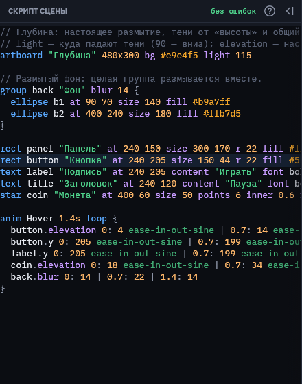
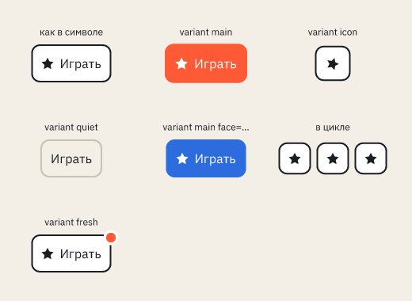
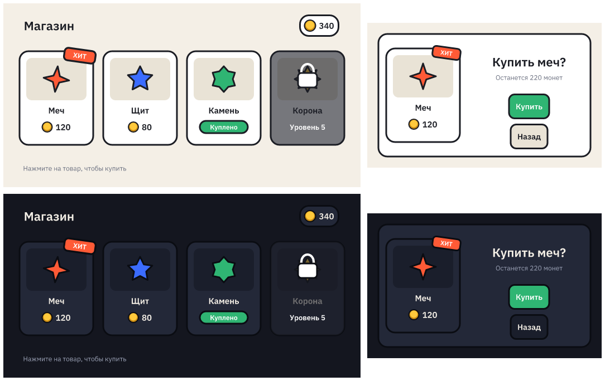
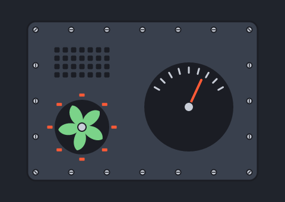
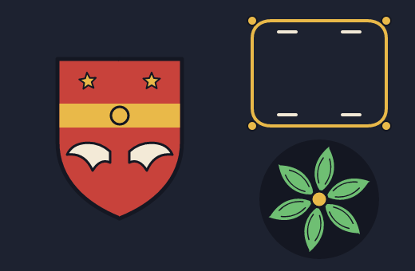
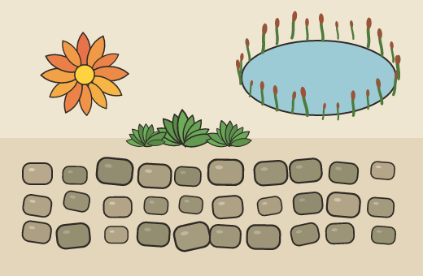
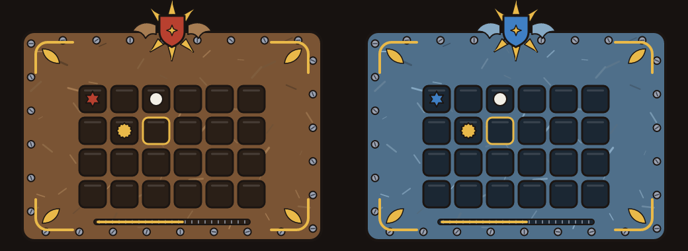
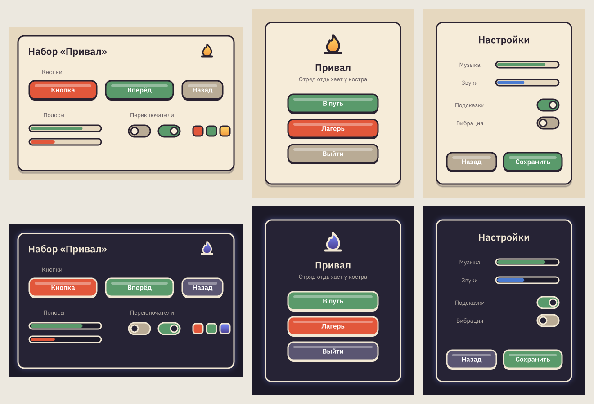
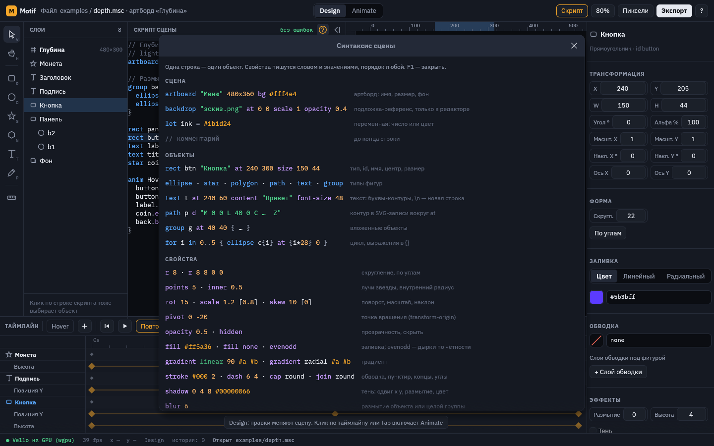

Скрипт сцены (.msc)
Новое: сетки deform, формы контура, ключи появления и общий кадр.
Сцена Motif — это короткий текст. Одна строка описывает один объект: тип, имя и свойства. Текст можно писать вручную, а можно рисовать мышью и смотреть, как он пишется сам.

Панель скрипта находится рядом с холстом:
- каждое изменение текста сразу перерисовывает сцену;
- клик по строке выбирает объект, а строки выбранного объекта подсвечены;
- пока в тексте есть ошибка, на холсте остаётся последняя рабочая версия, а строка с ошибкой подсвечена красным и объяснена по-русски;
- F1 или «?» в заголовке панели открывает шпаргалку, Ctrl+E сворачивает панель.
Как устроена строка
ellipse ball "Мяч" at 150 150 size 72 fill #ff5a36 stroke #1b1d24 4
│ │ │ └─ свойства: слово и значения, в любом порядке
│ │ └─ имя для панели слоёв (можно не писать)
│ └─ id: по нему объект находят анимации и игра
└─ тип объектаТипы объектов: rect, ellipse, star, polygon, path, text, group. Комментарии начинаются с // или с # в начале строки.
Полный пример
artboard "Главный" 480x360 bg #fff4e4
let ink = #1b1d24
ellipse ball "Мяч" at 150 150 size 72 fill #ff5a36 stroke ink 4
star star at 340 150 size 130 points 5 fill #ffc531
group coins at 36 40 {
for i in 0..5 {
ellipse coin{i} at {i * 28} 0 size 16 fill #ffd23f
}
}
anim Idle 1.2s loop {
ball.y 0: 120 ease-in | 0.6: 278 ease-out | 1.2: 120
star.rot 0: 0 linear | 1.2: 72
}Артборд, подложка, переменные
| Что | Запись | Пояснение |
|---|---|---|
| Версия формата | motif 1 | Первая строка файла. Motif пишет её сам при сохранении. Файл без неё — старый, он открывается как версия 1 и при сохранении получает строку. Motif ставит наименьшую версию, которая читает файл: сцена без направляющих остаётся motif 1, с ними — motif 2, с живой операцией (group … combine) — motif 3, со стилями (style), градиентами палитры или темами (theme) — motif 4, с вариантами символа (variant) — motif 5, с живым повтором (group … repeat) — motif 6. Файл более новой версии, чем понимает ваш Motif, не открывается: обновите Motif. Игры (Forge) принимают только файлы с этой строкой. Старые файлы, которые обязаны открываться всегда, лежат в tests/old-formats/. |
| Скрытый id | input speed 0 id=k7f2 | Постоянный id, к которому привязывается игра. Его получают входы и состояния машин, анимации (anim Idle 1s loop id=… {), события и параметры позы. Motif дописывает id сам при сохранении всему, у чего его ещё нет, и сохраняет при переименовании: speed можно переименовать в скорость, и привязка в игре не порвётся. У всех строк одного события id один. Два входа одной машины (или две анимации, два параметра) с одним id — ошибка. Копируя строку руками, уберите из копии id=…: Motif даст новый. |
| Артборд | artboard "Имя" 480x360 bg #fff light 120 | Размер кадра, фон и куда падают тени от «высоты» (90 — вниз, по умолчанию). |
| Несколько холстов | artboard "Кнопка" 240x100 cell 1 0 | Каждая строка artboard открывает холст до следующей такой строки; всё выше первого холста (переменные, комментарии) общее для всех. cell — столбец и строка в сетке холстов, с нуля; без него холст встаёт в первую свободную ячейку. См. «Холсты». |
| Для чего сцена | artboard "Меню" 480x360 ui, … game | Режим редактора: ui — интерфейс, game — игровая графика, без слова — все инструменты. То же переключает «Всё / UI / Игра» сверху. |
| Направляющая | guide x 120, guide y 80 locked | Линия редактора: вертикальная на x или горизонтальная на y. К ней прилипают объекты и точки. locked — мышь её не сдвигает. Пишется на верхнем уровне, у каждого холста свои. В рендер, экспорт и игру не попадает. Появилась в формате 2. Подробнее — Направляющие. |
| Подложка | backdrop "эскиз.png" at 0 0 scale 0.5 opacity 0.4 | Картинка-референс, только в редакторе. Файл ищется рядом со сценой. Можно добавить hidden. |
| Лист спрайтов | backdrop "run.png" sheet 8 2 frames 14 fps 12 frame 3 | Подложка — сетка кадров: колонки и ряды, сколько кадров занято (по умолчанию все), кадров в секунду (12) и кадр в Design (с 0). В Animate кадры идут по времени таймлайна. См. «Лист спрайтов». |
| Слои PSD | backdrop "герой.psd" hide "Цвет" "Заметки" show "Сетка" | Подложка из файла Photoshop: слои и группы, спрятанные (hide) и показанные (show) вопреки файлу, по имени; кавычка внутри имени пишется как \". Остальные — как в PSD. См. «PSD слоями». |
| Переменная | let gap = 28, let ink = #1b1d24 | Число или цвет, используется дальше по имени. |
| Градиент палитры | let sunset = linear 90 gold ember, let halo = radial #fff gold | Градиент под именем: ниже. |
| Стиль | style card fill #ffffff stroke ink 2 r 14, rect a … style card | Вид под именем: объект берёт его словом style. Своё свойство объекта главнее стиля. См. «Стили». |
| Тема | theme night { … } | Другие значения тех же имён палитры и стилей: одна сцена показывается и выгружается в нескольких видах. См. «Темы». |
| Выражение | {i * gap + 4} | Считается в фигурных скобках в значениях и в id. |
| Цикл | for i in 0..5 { … } | Повторяет строки внутри, i от 0 до 4. |
| Группа | group g at 40 40 { … } | Вложенные объекты двигаются вместе с группой. |
| Символ и копия | symbol Coin size=16 { … }, use Coin c1 at 40 40 size=24 | Рисуется один раз, вставляется много раз. См. «Символы». |
| Кость | bone arm at 100 80 len 60 { bone hand at 60 0 len 40 ik target }, rect sleeve … skin arm hand | Скелет, IK и фигуры, которые гнутся костями. См. «Кости и IK». |
| Морфинг | ellipse blob … morph star heart, ключи blob.morph 0: 0 | 1: 1 | 2: 2 | Фигура перетекает в контуры других фигур: 0 — она сама, 1 — первая цель. См. «Анимация». |
| Метки морфинга | match "0>1 0:0=0:0.5 2=1 3:0.5=*" | Между соседними контурами morph или forms: какое место куска становится каким (доля длины 0–1), какой кусок каким, откуда растёт кусок без пары. См. «Метки». |
| Пружина | spring 3 0.3 | Ключи положения, размера и поворота догоняются с перелётом. См. «Физика». |
| Покачивание кости | bone tail … jiggle 2.5 0.4 | Кость отстаёт от родительской и раскачивается. |
| Сжатие и растяжение | squash 0.6 6 0.3 | Тянется на скорости, сплющивается при ударе. См. «Физика». |
| Частицы | ellipse spark … emit 40 life 1 speed 160 spread 50 weight -0.07 fade 0 | Фигура становится источником частиц. См. «Физика». |
| Верёвка, цепь, ткань | path cord … rope pin start wind 200, group lamp … hang cord, ellipse link … links chain, rect flag … cloth pin left | Провисает, качается, полощется. См. «Физика». |
| Жидкость | rect water … fluid 0.1, rect tap … fluid flow 60 | Вода в фигуре или льётся из неё. См. «Физика». |
| Для игры | group muzzle at 60 0 socket, rect hitbox … area | socket — точка крепления: игра каждый шаг читает её место, поворот и масштаб. area — область (тело, зона удара): контур читает игра, а рисуется она только в Motif, пунктиром. В инспекторе — раздел «Для игры». См. «Точки крепления и области». |
| Мягкое тело | ellipse ball … soft 0.2 pressure 1 drive 0.4, rect wall … solid | Форму считает физика. См. «Физика». |
| Гравитация и ветер | world gravity 0 900 wind 200 0 gust 0.4; у объекта weight 0.5 sail 2; ключи world.wind-x 0: 0 | 2: 600 | Куда всё падает и куда дует ветер. См. «Физика». |
| Притяжение и вентилятор | ellipse hole … pull 2600 range 200, rect fan … rot -90 fan 600 cone 40; ключи hole.pull 0: 0 | 1: 4000 | Тянет к себе или дует в свою сторону. См. «Физика». |
| Объект на шаре | on planet lat 20 lon -30 alt 0 wrap, у шара yaw 30 pitch 10 | Орбита 2.5D. См. «Орбиты 2.5D». |
| Кисть | rough 3 [40], boil 8, seed 2, hatch 45 6 [1.5] [#цвет] [cross], grain 0.15 [2] [#цвет], bands 3; ключ rough | Рисунок «от руки»: неровный контур, дрожание линии, штриховка, зерно, свет ступенями. См. «Кисть». |
| Интерфейс | group button … ui slice 20 { … }, rect bar … slice 16 12, slice 22 46 22 22 | Деталь UI-набора; поля 9-slice: одно на все стороны, по бокам и сверху-снизу, или слева, сверху, справа, снизу. Состояния — анимации Hover Press Disabled Focus. См. «UI-наборы». |
| Элементы Godot | group hp ui progress { … }, rect juice … part fill, text caption … part text | Слово после ui — тип в Godot: button panel progress check slider scroll label. part — деталь внутри: background fill unchecked checked track grabber text. Подпись part text рисует Godot шрифтом темы. См. таблицу деталей. |
| 3D-тело | rect cube … extrude 90 yaw 30 pitch 25, ellipse cone … extrude 120 0; ключи depth taper yaw pitch | Фигура выдавливается в глубину и поворачивается в пространстве. См. «3D-тела». |
| Катится по шару | on globe … roll 0.3 0.05 weight 1 | Сам катится по шару вниз, толкает соседей. См. «Физика на шаре». |
| Машина состояний | machine Hero { state Idle … Idle -> Run when speed > 0.5 } | Какую анимацию играть. См. «Машина состояний». |
| Веса костей | weights leg { hip 18 1 at -10 -78 -10 -32 } | Мазки кисти весов поверх весов по расстоянию. См. «Веса кистью». |
Символы
Символ — это кусок сцены, который рисуют один раз, а вставляют много раз: монета, кристалл, кнопка, мяч. Поменяли символ — поменялись все копии. У каждой копии свои место, поворот, масштаб и параметры.
symbol Coin size=28 color=#ffd23f {
ellipse rim size {size} fill #d99a1e stroke ink 3
ellipse face size {size * 0.72} fill color
}
use Coin c1 at 60 44
use Coin c2 "Большая" at 140 44 size=44 color=#c9d1e0 rot 15
anim Idle 1s loop {
c2.rot 0: 0 linear | 1: 360
c1-face.sx 0: 1 | 0.5: 0.2 | 1: 1
}| Что | Запись | Пояснение |
|---|---|---|
| Символ | symbol Имя имя=значение … { … } | Пишется на верхнем уровне. Сам по себе не рисуется. Параметры — числа или цвета со значением по умолчанию, внутри символа это обычные переменные: size {size}, fill color. |
| Маска | symbol Ball clip size=64 { … } | Первый объект каждой копии обрезает остальные: рисунок на мяче виден только внутри мяча и сжимается вместе с ним. |
| Копия | use Имя id ["имя"] свойства параметры | Копия — это группа: at, rot, scale, opacity, blur и другие свойства группы, плюс имя=значение для параметров. Незаписанные параметры берутся по умолчанию. |
| Объекты копии | c1-face | id копии, дефис, id внутри символа. По нему анимируют и правят одну копию. |
| В цикле | for i in 0..6 { use Coin coin{i} at {i * 40} 0 } | Копии можно ставить циклом и в группы. |
| Вариант | variant main face=accent hide icon | Строка внутри symbol: именованный набор значений параметров и объектов символа, которые вариант скрывает (hide) или показывает (show). Подробнее ниже. |
| Теги | tags кнопка меню "главный экран" | Строка внутри symbol: слова, по которым символ находят в «Библиотеке». Слово с пробелом пишется в кавычках. На рисунок теги не влияют. Строка одна на символ. |
| Копия-вариант | use Button b2 at 40 90 variant main | Копия берёт вариант символа. Параметр, записанный у самой копии, сильнее варианта. |
Блок symbol правится и мышью: двойной щелчок по копии в «Рисовании» открывает символ, и правки внутри пишутся в его строки, то есть меняют все копии (подробнее). Правка объекта копии только для неё самой (например, сдвиг c1-face при включённом «только эту копию» или ключ анимации) записывается в override или в клип и остальные копии не трогает. Подробнее о работе с символами в редакторе — на странице «Панель свойств».
Варианты символа
Вариант — это один и тот же символ в другом виде: кнопка обычная, главная и с одной иконкой. Рисунок у вариантов общий, отличаются значения параметров и то, какие детали показаны. Поправили символ — поправились все варианты.
let accent = #ff5a36
symbol Button face=#ffffff text=#1b1d24 {
variant main face=accent text=#ffffff
variant icon hide label
variant fresh show badge
group row stack row center gap 8 pad 12 {
rect bg fit r 10 fill face
star glyph size 16 fill text
text label content "Играть" font-size 16 fill text
}
ellipse badge at 50 -20 size 14 14 fill accent hidden
}
use Button plain at 90 80
use Button play at 260 80 variant main
use Button star at 420 80 variant icon
use Button buy at 260 200 variant main face=#2d6cdf
use Button fresh at 90 320 variant fresh
examples/variants.msc: один символ Button, девять копий.- Значения. После имени варианта идут
параметр=значение. Порядок такой: значение по умолчанию из строкиsymbol, поверх него значение варианта, поверх него то, что записано у самой копии. В варианте значением может быть имя палитры (face=accent), поэтому темы меняют и варианты; в умолчаниях символа имена палитры не пишутся. - Скрытые детали. После
hideидут id объектов символа, которых у этого варианта нет. Скрытая деталь не занимает места в раскладкеstack: кнопка без подписи сама становится уже. - Показанные детали. После
showидут id объектов, которые в самом символе записаны со свойствомhidden. Такой детали нет ни в одной копии, пока вариант её не покажет: метка «новое», замок, лента «хит». Добавили в символ новую скрытую деталь — готовые копии не изменились, деталь появится только там, где вариант её показывает. - Копия без слова
variantрисуется как сам символ. Вариант у копии один. - Ошибки. Имя варианта, которого у символа нет, неизвестный параметр и объект после
hideилиshow, которого нет в символе, показываются с подсказкой. Один объект нельзя и скрыть, и показать в одном варианте.
Файл с вариантами сохраняется как motif 5. Игре вариант ничего не стоит: он применяется при чтении скрипта, как стиль. Работа с вариантами в редакторе — в разделе «Панель свойств».
Набор из символов
Пример examples/shop.msc собран так, как собирают набор для игры: три символа, два холста и две темы в одном файле. Всё общее записано один раз выше первого artboard: палитра, стили, тема night и символы Coin, Button, Card.

night.- Карточка товара одна на все товары. Лента «ХИТ», замок и отметка «Куплено» нарисованы в символе скрытыми (
hidden), их показывают вариантыhit,lockedиsold. Обычная карточка пишется без варианта. Новая скрытая деталь в символе готовые копии не меняет. - Рисунок товара задают параметры копии:
tint=#2fb573 points=6 inner=0.7. - Название и цена у каждой карточки свои: строки
sword-name.content = "Меч"в блокеoverride(свой текст у копии). - Монета — символ внутри символа: она стоит в цене карточки и в кошельке.
- Кнопка растёт по подписи (раскладка
stack), вариантыbuyиquietменяют её цвета.
Посмотреть набор в теме: motif render examples/shop.msc --theme night -o папка.
Живые повторы
Группа со словом repeat показывает то, что в ней лежит, несколько раз: сеткой, по кругу, вдоль контура другой фигуры или отражением в зеркале. То, что написано в блоке, — первый повтор. Остальные Motif делает сам при чтении файла, поэтому правка первого сразу меняет все. Пример — examples/repeats.msc.

rect plate at 240 170 size 388 268 r 14 fill #39404d
group rivets repeat along plate 20 offset 14 {
ellipse rivet size 9 9 fill #c9ced8
}
group grille at 96 84 repeat grid 7 4 step 14 14 {
rect hole size 9 9 r 2 fill #1b1d24
}
group ticks at 318 118 pivot 0 62 rot -60 repeat circle 9 arc 120 {
rect tick size 3 12 fill #c9ced8
}| Вид | Запись | Пояснение |
|---|---|---|
| Сетка | repeat grid 7 4 step 14 14 | Столбцы и строки, потом шаг вправо и вниз. Одно число после step — шаг в обе стороны. Шаг может быть отрицательным: сетка растёт влево или вверх. |
| По кругу | repeat circle 8, repeat circle 9 arc 120 | Повторы поворачиваются вокруг опорной точки группы (pivot; без него это точка at группы). arc — часть круга в градусах, от -360 до 360: повторы стоят на обоих её концах. Без arc круг целый. |
| Вдоль контура | repeat along plate 20, … offset 14 | Повторы стоят равномерно по контуру фигуры с этим id, первый — в его начале. У замкнутого контура длина делится на равные части, у открытого повторы стоят на обоих концах. offset — отступ от контура внутрь (отрицательный — наружу). |
| Без поворота | repeat circle 8 upright, repeat along plate 20 upright | Повторы встают на те же места, но каждый остаётся прямым. Без этого слова повтор поворачивается по кругу или по направлению контура, а на углу контура встаёт между двумя сторонами. |
- Имена повторов. Первый повтор — сами строки блока:
rivet. Остальные получают id от группы: в сеткеgrille-2-1(столбец, строка), в круге и вдоль контураrivets-2,rivets-3…, а объекты в них —rivets-3-rivet. По этим id их анимируют и правят вoverride:rivets-3.x = 4сдвинет одну заклёпку. При добавлении столбцов и строк имена прежних клеток не меняются. - Вдоль контура место задаёт контур. У такой группы не пишутся
at,rot,scale,skewиpivot. Контур берётся таким, каким он стоит на холсте, в какой бы группе он ни лежал; сам он должен быть снаружи повтора. Изменили размер или скругление панели — заклёпки встали заново. - Что можно положить в повтор. Любые объекты, копии символов (
use), циклы и другие повторы. Объекты повтора ссылаются только на то, что лежит в нём самом (кости, маски, шар дляon), как объекты символа. - Чего нельзя.
repeatбывает только уgroupи не бывает вместе сclip,stackиcombine: положите такую группу внутрь повтора. Копия символа сама не повторяется, её кладут в группу. В одной группе не больше 2000 повторов. - В игре. Повторы раскрываются при чтении скрипта, как цикл
for: игра получает обычные объекты с постоянными id и ничего не считает на кадре. Анимация первого повтора остальные не двигает; чтобы двигалось всё, анимируйте саму группу (fan.rot) или пишите дорожки для нужных повторов.
Файл с повторами сохраняется как motif 6. Слова step, arc, offset, upright и mirror значат что-то только после repeat: объект по-прежнему можно назвать arc или step. Там же пишутся слова разброса vary-…. Работа с повторами в редакторе — в разделе «Живые повторы».
Симметрия
Симметрия — тот же повтор: рисуете половину герба или пол-лепестка, остальное группа показывает отражением. Правите половину — меняется всё. Пример — examples/symmetry.msc.

group crest at 150 170 repeat mirror x {
path shield d "M 0 -96 L -78 -96 L -78 8 C -78 58 -40 88 0 104" fill #c8423b stroke #141722 5
}
group frame at 400 92 repeat mirror x y {
path corner d "M -84 0 L -84 -44 C -84 -58 -74 -66 -60 -66 L 0 -66" fill none stroke #e9b949 4
}
group flower at 400 250 repeat circle 6 mirror {
path petal d "M 0 -8 C 14 -22 20 -44 0 -68" fill #6fbf73
}| Вид | Запись | Пояснение |
|---|---|---|
| Слева направо | repeat mirror x | Отражение в вертикальной оси. Одно слово repeat mirror значит то же. |
| Сверху вниз | repeat mirror y | Отражение в горизонтальной оси. |
| Четыре четверти | repeat mirror x y | Обе оси сразу: рисуется одна четверть. |
| Секторы с отражением | repeat circle 6 mirror | У каждого повтора круга рядом встаёт его отражение в оси, которая идёт от центра вверх и поворачивается вместе с повтором. Из половины лепестка выходит целый цветок. Секторы без отражения — обычный repeat circle 6. Вместе с upright не пишется. |
- Где ось. Оси идут через опорную точку группы (
pivot; без него это точкаatгруппы). Поворот группы (rot) поворачивает оси вместе с рисунком. - Имена отражений.
crest-x,frame-y,frame-xy, а объекты в них —crest-x-shield. В круге отражение повтора получает буквуm:flower-1m— отражение написанного,flower-2иflower-2m— второй сектор. Номерные повторы сохраняют id, когда отражение включают и выключают. - Половины сходятся без шва. Половину контура рисуют незамкнутой, с концами на оси: заливка смыкается по оси сама, а обводка по оси не идёт. Отражение такого контура Motif рисует с заходом за ось на единицу (каждый следующий слой на единицу дальше, не больше четырёх), иначе между двумя заливками встык просвечивала бы волосяная линия. Замкнутый контур и контур, который до оси не доходит, отражаются как есть.
- Что на оси, рисуется один раз. Камень в середине герба лежит снаружи группы с зеркалом или целиком по одну сторону оси. Текст в отражении тоже зеркальный, подписи ставят снаружи.
- Порядок. Отражение рисуется поверх написанной половины, со всеми своими слоями.
Разброс
Повторы сетки, круга и контура могут немного отличаться от нарисованного: каждый камень мостовой лежит по-своему, у каждого лепестка свой оттенок. Сколько достаётся каждому повтору, считается из числа vary-seed и места повтора. Поэтому одно и то же зерно всегда даёт один и тот же рисунок: при каждом открытии файла, в редакторе, в игре и на любой машине. Другое зерно даёт новый вариант из тех же строк. Пример — examples/variation.msc.

group paving at 46 214 repeat grid 10 3 step 47 38 vary-at 5 4 vary-rot 14 vary-scale 0.22 vary-fill moss 0.55 vary-seed 3 {
rect slab size 36 26 r 9 fill stone stroke ink 2
}
group reeds repeat along pond 26 offset -3 upright vary-at 0 4 vary-rot 10 vary-scale 0.3 vary-seed 5 {
path reed d "M 0 0 C 2 -8 -2 -14 0 -22" stroke #4f7a3c 3 fill none
}| Слово | Запись | Пояснение |
|---|---|---|
| Сдвиг | vary-at 5 4 | На сколько самое большее сдвинуть повтор в каждую сторону: по X и по Y. Одно число — оба сразу. |
| Поворот | vary-rot 14 | На сколько градусов самое большее повернуть повтор в каждую сторону, от 0 до 180. |
| Размер | vary-scale 0.22 | Доля, на которую повтор бывает больше и меньше: 0.22 даёт от 0.78 до 1.22 размера. От 0 до 0.95. |
| Цвет | vary-fill moss 0.55 | Цвет и доля от 0 до 1: заливки каждого повтора смешиваются с этим цветом, самое большее на столько. Цвет — #rrggbb или имя из палитры. |
| Зерно | vary-seed 3 | Целое число от 0 до 999999, от которого всё это считается. Без слова зерно равно 1. |
- Первый повтор не меняется. То, что написано в блоке, остаётся таким, как нарисовано. Отличаются повторы, которые делает группа.
- Вокруг чего. Повтор поворачивается и меняет размер вокруг середины нарисованного, поэтому остаётся в своей клетке. У повтора вдоль контура это точка на контуре.
- Куда сдвиг. Сдвиг считается по осям самого повтора. В сетке это вправо и вниз. В круге оси повёрнуты вместе с повтором: если первый стоит над центром, ось Y у каждого идёт к центру и от него. Вдоль контура ось X идёт по контуру, ось Y поперёк:
vary-at 0 4шевелит камыши только поперёк берега. Сuprightоси те же, что у группы. - Что красится. Смешивается сплошная заливка (
fill); обводка и градиент остаются. Прозрачность заливки не меняется. Цвет, записанный одному повтору вoverride, важнее. - Повтор помнит свой вид. Значения привязаны к месту повтора, то есть к хвосту его id (
2-1,7). Добавили столбец или переименовали группу — прежние повторы выглядят как раньше. - Одно зерно — один разброс. Две группы с одинаковым зерном и одинаковыми пределами разбрасывают свои повторы одинаково. Чтобы ряды травы отличались друг от друга, дайте им разные числа.
- Зерно как параметр символа.
symbol Bush look=1 { group leaves repeat circle 9 … vary-seed look { … } }, затемuse Bush b1 look=1иuse Bush b2 look=2: два разных куста из одного символа. - Не вместе с зеркалом. У
repeat mirror …иrepeat circle 6 mirrorсловvary-…нет: отражение должно сойтись со своей половиной. - В игре. Разброс считается при чтении скрипта, как и сами повторы: пока сцена играет, он не меняется. Если игре нужен другой вариант того же рисунка (второй куст, другой двор), она передаёт своё зерно:
set_vary_seed(7)в рантайме,--vary-seed 7в командной строке. Это число прибавляется к каждомуvary-seedсцены. С нулём сцена такая, как записана, и такой её показывает редактор.
Формат файла тот же, motif 6. В редакторе это блок «Разброс» в разделе «Повтор».
Набор из повторов
Пример examples/inventory.msc — окно инвентаря, собранное так, как собирают набор для игры. В нём нарисованы одна заклёпка, одна царапина, одна ячейка, один угол рамки, половина герба и половина луча. Остальное, больше ста сорока повторов, показывают группы с repeat.

frost. Царапины стоят на тех же местах, оттенки сменились вместе с деревом.- Заклёпки идут вдоль контура доски:
repeat along board 28 offset 13 upright vary-rot 90. Они стоят ровно, а шлиц у каждой повёрнут по-своему. Поменяли размер доски или число — заклёпки встали заново. - Потёртость дерева сделана из одной чёрточки: сетка 9 на 6 с разбросом места, поворота, длины и оттенка. Другое
vary-seedдаёт другую доску из тех же строк. - Рамка — один угол и
repeat mirror x y. Герб — половина щита с крылом (repeat mirror x) и половина луча (repeat circle 8 mirror). - Ячейки — копия символа
Slotв группе с сеткой 6 на 4. Правка символа меняет все 24. - Выбранная ячейка — правка одного повтора: строка
slots-3-2-s-cell.stroke = #e9b949вoverride. Остальные остаются как первая. - Вещи в ячейках — обычные объекты поверх сетки: повтор нужен тому, что одинаково.
- Тема меняет палитру, и оттенки разброса меняются вместе с ней:
vary-fill wood_dark 0.9записан именем из палитры.
Посмотреть набор в теме: motif render examples/inventory.msc --theme frost -o inventory.png.
Стили
Стиль хранит вид под именем. Он пишется одной строкой на верхнем уровне, а объект берёт его словом style на своей строке. Поменяли строку стиля — изменились все объекты, которые его берут. Пример — examples/styles.msc.
let ink = #1b1d24
style card fill #ffffff stroke ink 2 r 14 shadow 0 6 12 #00000033
rect card1 at 100 110 size 150 160 style card
rect card2 at 260 110 size 150 160 style card fill #fff4c2
rect card3 at 420 110 size 150 160 style card no shadow| Что | Запись | Пояснение |
|---|---|---|
| Стиль | style имя свойства… | Одна строка на верхнем уровне, выше или ниже объектов. Имя — одно слово без кавычек. Строка выше первого artboard общая для всех холстов файла. |
| Что хранит стиль | fill, gradient, stroke, stroke-gradient, dash, cap, join, outline, opacity, blend, r, shadow, inset, glow, blur, noise, elevation, rough, boil, bands, hatch, grain, seed, font, font-size, letter-spacing, line-height, align | Только вид. Место, размер, контур, кости, физика и роль в интерфейсе остаются на строке объекта. Значения пишутся как у объекта, цвета палитры работают по имени (fill paper). |
| Объект берёт стиль | rect a … style card | Работает у любых объектов, в группах, циклах и символах. Объект берёт из стиля то, что у него бывает: прямоугольник не возьмёт шрифт, группа не возьмёт кисть. |
| Своё поверх стиля | … style card fill #fff4c2 | Свойство на строке объекта главнее стиля. Своя заливка fill заменяет и градиент стиля, своя обводка stroke заменяет градиент обводки. |
| Отказ от свойства | … style card no shadow | Объект не берёт это свойство из стиля: тени у него нет, даже если она есть в стиле. |
Стиль применяется, когда скрипт читается: в документе, в картинке и в игре это обычные объекты, поэтому анимация, override и экспорт работают как раньше. Стиль не берёт другой стиль. Работа со стилями в редакторе — на странице «Панель свойств».
Градиенты палитры
Цвета, названные строками let на верхнем уровне, составляют палитру. Градиент хранится в ней так же, под именем, а объект берёт его словом gradient или stroke-gradient. Поменяли строку let — изменились все объекты, которые берут градиент. Пример — examples/palette.msc.
let gold = #ffd23f
let ember = #ff5a36
let sunset = linear 90 gold ember
let halo = radial #fff8ea gold ember
style badge gradient sunset r 12
ellipse sun at 110 190 size 90 90 gradient halo
rect frame at 260 190 size 120 80 stroke #1b1d24 6 stroke-gradient sunset| Что | Запись | Пояснение |
|---|---|---|
| Градиент палитры | let имя = linear угол цвет цвет…, let имя = radial цвет цвет… | То же, что пишется после gradient: вид, угол линейного и от двух цветов. Цвета могут быть именами палитры. Строка стоит на верхнем уровне и выше объектов, которые берут градиент. Имя не совпадает с именем цвета. |
| Объект берёт градиент | gradient sunset, stroke-gradient sunset | Одно слово после свойства — имя градиента палитры. Работает на строке объекта и в стиле. |
Файл с градиентом палитры сохраняется как motif 4. В редакторе градиенты палитры, «Заменить везде» и «Собрать в палитру» описаны в разделе «Свойства и оформление».
Темы
Тема даёт именам палитры и стилям другие значения. Сцена записана один раз, а показывается, выгружается и играет в любой из тем: светлый и тёмный набор кнопок, летний и зимний тайл, обычный и праздничный значок живут в одном файле. Пример — examples/themes.msc.
let paper = #f4efe6
let main = #3b6cff
let radius = 14
let face = linear 90 #6f93ff main
style sheet fill #ffffff stroke #1b1d24 3 r radius
theme night {
paper = #14161f
main = #7c5cff
radius = 8
face = linear 60 #a48bff #3d2a99
style sheet fill #232838 stroke #0a0c12 3 r radius glow 14 #7c5cff55
}
artboard "Кнопки" 560x330 bg paper| Что | Запись | Пояснение |
|---|---|---|
| Тема | theme night { … } | Блок на верхнем уровне сцены. Скобка { стоит в конце строки, каждая запись — на своей строке. Одну тему можно писать в нескольких блоках (общая часть файла и холст): они складываются. |
| Цвет или число | paper = #14161f, radius = 8 | Другое значение имени, которое названо строкой let на верхнем уровне. Цвет остаётся цветом, число — числом. |
| Градиент | face = linear 60 #a48bff #3d2a99 | Другой градиент палитры под тем же именем. Вид (линейный или радиальный) может быть другим. |
| Стиль | style sheet fill #232838 r radius | Строка стиля в теме заменяет строку стиля целиком: свойства, которых в ней нет, из исходной строки не берутся. |
- Тема пишет только то, что в ней другое. Остальные имена остаются как в сцене.
- Значение темы встаёт на место строки
letилиstyle, поэтому за темой идёт всё, что берёт имя: объекты, стили, градиенты палитры, ключи анимации с именем цвета, фон холста. - Тема не добавляет имён и объектов. Запись с именем, которого нет в палитре или в стилях, — ошибка; сообщение называет имена, которые есть.
- Ошибка в любой теме видна сразу, какая бы тема ни была показана.
- Тема — выбор того, кто показывает сцену: редактора, командной строки (
--theme night) или игры (set_theme, см. «Рантайм»). В файле не записано, какая тема «текущая». Без выбора сцена показана как записана.
Файл с темой сохраняется как motif 4. Работа с темами в редакторе — в разделе «Свойства и оформление», выгрузка — на странице «Экспорт».
Подключение другого файла
Набор лежит в своём файле, а экраны берут его строкой include. Сцена получает цвета, градиенты, стили, темы и символы набора так, как будто они записаны в ней самой. Поменяли кнопку в файле набора, и она поменялась во всех экранах. Пример: набор examples/kit.msc и два экрана на нём, examples/kit-screens.msc.

night, которая записана в наборе.motif 7
include "kit.msc"
let cold = #4b7bd1
artboard "Привал" 360x420 bg well ui
rect panel at 180 210 size 300 360 style card
use Button resume at 180 210 variant go w=200
override {
resume-label.content = "В путь"
}| Что | Правило |
|---|---|
| Строка | include "kit.msc" на верхнем уровне файла, в начале. В файле с несколькими холстами она стоит выше первого artboard и служит всем холстам. Имена набора известны со строки и ниже. |
| Путь | От папки сцены: kit.msc, kits/ui.msc, ../kit.msc. Путь от корня диска не принимается: проект должен открываться и на другом компьютере. |
| Что берётся | Строки let (цвета, числа, градиенты палитры), style, theme и блоки symbol, записанные на верхнем уровне набора. В наборе с несколькими холстами берётся то, что стоит выше первого artboard. |
| Что остаётся в наборе | Его холсты и объекты на них, анимации, машины состояний. Лист набора нужен, чтобы видеть набор целиком; в экраны он не попадает. |
| Набор подключает набор | Файл набора может сам подключать другие файлы, например общую палитру. Файл, который пришёл двумя путями, берётся один раз. Если файлы подключают друг друга по кругу, это ошибка, и в ней названа вся цепочка. |
| Шрифты | Файл шрифта, который назван в символе набора, ищется рядом с набором. |
| Одним файлом | «Собрать в один файл…» в редакторе или motif bundle сцена.msc -o одна.msc пишет копию сцены, где вместо строк include стоят строки наборов. Такая сцена открывается без набора. Исходная сцена не меняется. |
| Символ отдельно | «Сохранить в файл…» у символа или motif extract сцена.msc --symbol Button -o button.msc пишет символ отдельным файлом вместе с тем, что он использует: именами палитры, стилями, вложенными символами, строками тем для них и шрифтами. Остальное из набора в файл не попадает. |
- Набор меняют в нём самом. Из экрана нельзя поменять цвет, стиль, тему или символ набора: редактор откажет и назовёт файл. Копию символа настраивают как обычно: параметры, вариант, свой текст и правки в
overrideпринадлежат экрану. - Своё имя сильнее. Строка
letс именем из набора, записанная нижеinclude, даёт этому экрану свой цвет: копии символов, поставленные ниже неё, возьмут его. Символ или стиль с именем из набора записать второй раз нельзя. - Тема набора — тема экрана. Экран показывается в теме, записанной в наборе, и может дописать в неё свои имена своим блоком
theme. - Ошибки говорятся у строки
include. Нет файла, ошибка в наборе (с номером строки в нём), круг. Набор с ошибкой не подключается: сначала его нужно исправить. - «Заменить везде» и «Собрать в палитру» меняют только строки самого экрана. Набор они не трогают.
- В игру. Сцена читается вместе с файлами, которые подключает, поэтому они должны лежать рядом с ней по тем же путям.
motif checkперечисляет их в строке «подключено», договор сцены — в полеincludes, рантайм — вincludes(). В проект Godot сцена ставится одним файлом: строки набора записываются прямо в копию.
Файл со строкой include сохраняется как motif 7. Сам набор остаётся той версии, которая ему нужна. Работа в редакторе — в разделе «Свойства и оформление».
Свойства объектов
| Что | Запись |
|---|---|
| Позиция центра | at x y |
| Размер | size w [h] |
| Скругление (одно или по углам) | r 8, r 8 8 0 0 |
| Лучи и внутренний радиус звезды | points 5, inner 0.5 |
Контур (SVG path data, вокруг at) | d "M 0 -20 C 15 -20 20 0 0 20 L -10 0 Z" |
| Поворот, масштаб, наклон | rot 15, scale 1.2 [0.8], skew 10 [0] |
| Точка вращения | pivot -30 0 |
| Прозрачность, скрыть | opacity 0.5, hidden |
| Заблокировать: клики по холсту проходят сквозь объект | locked |
| Заливка | fill #ff5a36, fill none |
| Градиент вместо заливки | gradient linear 90 #ffe7a3 #ff9d5c, gradient radial #fff #3b5bff #000 |
| Дырки по правилу even-odd | evenodd |
| Обводка | stroke #000 2 |
| Пунктир, концы, углы | dash 6 4, cap butt|round|square, join miter|round|bevel |
| Слои обводки под фигурой | outline #1b1d24 18 #ffffff 10 |
| Тень (размытие можно опустить) | shadow 0 4 8 #00000055, shadow 4 4 #000 |
| Внутренняя тень | inset 0 4 6 #000000aa |
| Свечение: размер, разлив, цвет | glow 12 #ffd34d, glow 16 4 #6f93ffcc |
| Градиентная обводка | stroke-gradient linear 90 #ffe9a8 #b56a1f |
| Шум: сила 0…1 и крупинка | noise 0.15, noise 0.2 2 |
| Размытие объекта или группы | blur 6 |
| Высота над артбордом | elevation 12 |
| Наложение | blend multiply: screen, overlay, darken, lighten, color-dodge, color-burn, hard-light, soft-light, difference, exclusion, hue, saturation, color, luminosity |
| Маска у группы | group окно clip { ellipse форма … остальное … } |
| Живая операция у группы | group луна combine subtract { ellipse диск … ellipse тень … }: union, subtract (нижняя минус верхние), intersect, exclude. Фигуры остаются в файле, рисуется один контур стилем первой. Появилась в формате 3. Подробнее — Живые операции. |
| Живой повтор у группы | group ряд repeat grid 6 1 step 28 0 { ellipse заклёпка … }, repeat circle 8, repeat along панель 12 offset 8. Группа показывает то, что в ней лежит, несколько раз. Появился в формате 6. Подробнее — Живые повторы. |
| Разброс у повторов | repeat grid 10 3 step 47 38 vary-at 5 4 vary-rot 14 vary-scale 0.2 vary-fill #5b6b4a 0.5 vary-seed 3. Повторы отличаются от первого в этих пределах; одно и то же зерно всегда даёт один и тот же рисунок. Подробнее — Разброс. |
| Симметрия у группы | group герб repeat mirror x { половина… }, repeat mirror y, repeat mirror x y, repeat circle 6 mirror. Группа показывает то, что в ней лежит, и его отражение в осях через свою опорную точку. Подробнее — Симметрия. |
| Стек у группы | group меню stack column center gap 10 pad 18 { … }: row или column, выравнивание start|center|end |
| Фон по размеру стека | rect фон r 18 fill #1f2333 fit внутри группы со стеком |
| Привязка к краю | anchor right, anchor center bottom: at считается от этой точки артборда |
Цвета пишутся как #rgb, #rrggbb или с прозрачностью #rrggbbaa (#00000055 — чёрный на треть).
Текст
text title "Заголовок" at 240 112 content "МОТИФ" font bold font-size 84 letter-spacing 6
text hint at 240 200 content "Первая строка\nвторая" align left line-height 1.4| Что | Запись |
|---|---|
Слова (\n — новая строка; \t — таб; \\ — буквальный обратный слеш; \" — кавычка) | content "Привет\nмир" |
| Шрифт | font bold, font regular, font "мой.ttf" |
| Размер, интервалы, выравнивание | font-size 48, letter-spacing 2, line-height 1.2, align left|center|right |
| Анимация букв | reveal 0.5 (доля появившихся букв), wave 6 (высота волны), phase 0.25 (положение волны) |
Анимации
anim Имя 1.2s [loop] {
объект.свойство время: значение [кривая] | время: значение [кривая] | …
event имя время время … [ключ=значение …]
}Строка event — событие для игры: имя одним словом и одно или несколько времён в секундах, в пределах анимации (event step 0 0.2). У одной анимации каждое имя пишется одной строкой.
После времён — данные, которые игра получает вместе с событием: event hit 0.3 damage=2 crit=true side=left say="ой, больно". Значение — число, true/false, слово или строка в кавычках; ключ в строке один раз, id занят скрытым id. Данные общие для всех времён строки. Без скрипта их задают на таймлайне: правый клик по флажку → «Данные для игры» (как). Когда событие двигают или переименовывают на таймлайне, данные остаются как написаны. В игре: Event::get("damage") в motif-runtime, сигнал event_data(имя, словарь) у MotifSprite, поле data у событий в договоре сцены. Запечённая выгрузка в Godot передаёт только имя.
Объект с именем event по-прежнему анимируется как event.x ….
Время — в секундах от начала анимации. Кривая после значения действует до следующего ключа, по умолчанию это ease-in-out. Имена свойств в анимации:
x y w h rot sx sy kx ky opacity r points inner fill stroke stroke_w, у текста ещё font-size letter-spacing reveal wave phase, для эффектов blur elevation shadow-x shadow-y shadow-blur glow inset-x inset-y inset-blur noise.
| Кривые | Запись |
|---|---|
| Базовые | linear, ease, ease-in, ease-out, ease-in-out, hold, spring |
| Покадрово | steps 4 |
| Своя кривая Безье | cubic 0.3 0 0.6 1.2 |
| easings.net | ease-in-sine … ease-in-out-bounce: sine, quad, cubic, quart, quint, expo, circ, back, elastic, bounce |
Формулы и override
Если значение задано формулой или циклом (например, at {i * 28} 0), редактор не трогает формулу при правке мышью. Вместо этого он дописывает правку в блок override в конце файла:
override {
coin2.y = 12
}Так формулы остаются формулами, а ручные правки видны отдельно. Строку из override можно удалить, и объект вернётся к значению по формуле.
Свой текст у копии. У текста внутри символа или цикла строка одна на все копии, поэтому слова одной копии тоже пишутся в override:
symbol Button {
group row stack row center pad 12 {
rect bg fit r 10 fill #2d6cdf
text label content "Играть" font-size 16 fill #ffffff
}
}
use Button play at 90 60
use Button buy at 90 120
override {
buy-label.content = "Купить всё"
}Кнопка play говорит «Играть», как символ, а buy — «Купить всё», и её фон в раскладке stack сам становится шире. В редакторе это делается без скрипта: выделите текст копии и напишите новые слова в поле «Текст» (подробнее). В примере examples/variants.msc так подписаны кнопки «Купить» и «Назад». Файл с такой строкой сохраняется как motif 5.
Сцена — обычный текст. Файлы .msc удобно хранить в git рядом с игрой: в истории видно, какое число поменялось. Их можно генерировать скриптами и проверять командой motif check.
